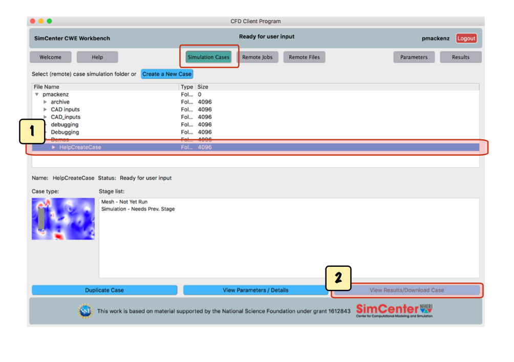
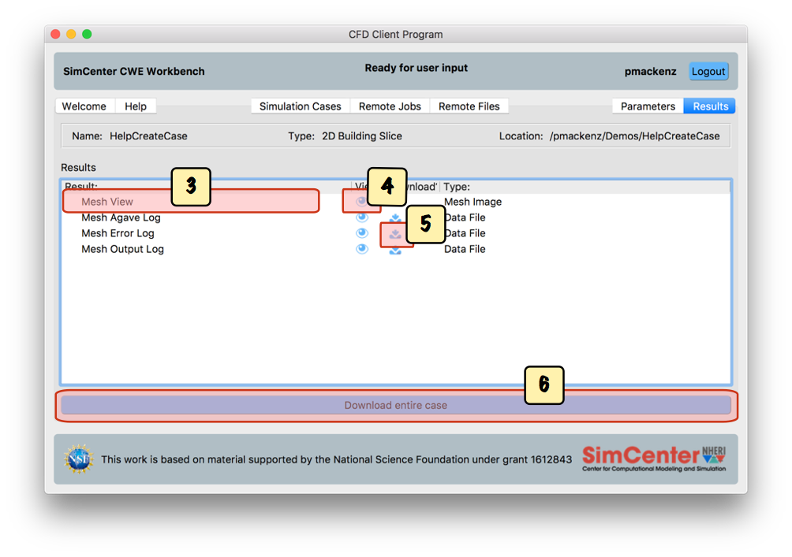
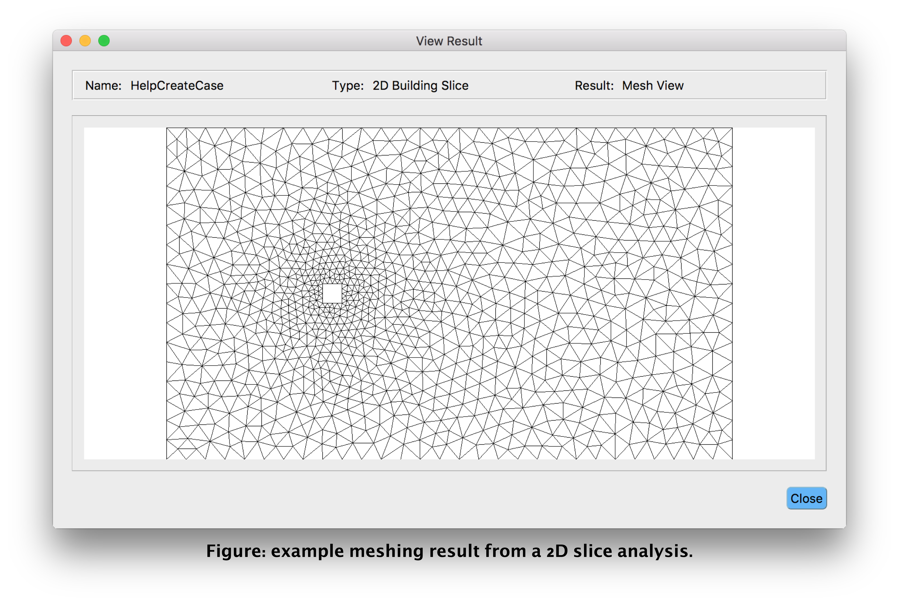

Once your case has finished running, you can view the results.
Start from the 'Simulation Cases' screen:

Select the folder that contains the case in the
tab.
Click to go to the results screen.

This screen will show a list of available results, depending on the type of case.
For each result file ,
either a view
or a download
action icon or both will be available as applicable,
allowing you to view or download that result by clicking on the respective action icon.
Furthermore, at the bottom the window [4], you may download the entire set of results by clicking

Since this work is under development, we invite input from out users regarding the sort of results which should be made available for viewing. Further development intends to add additional entries to the result list for various templates.